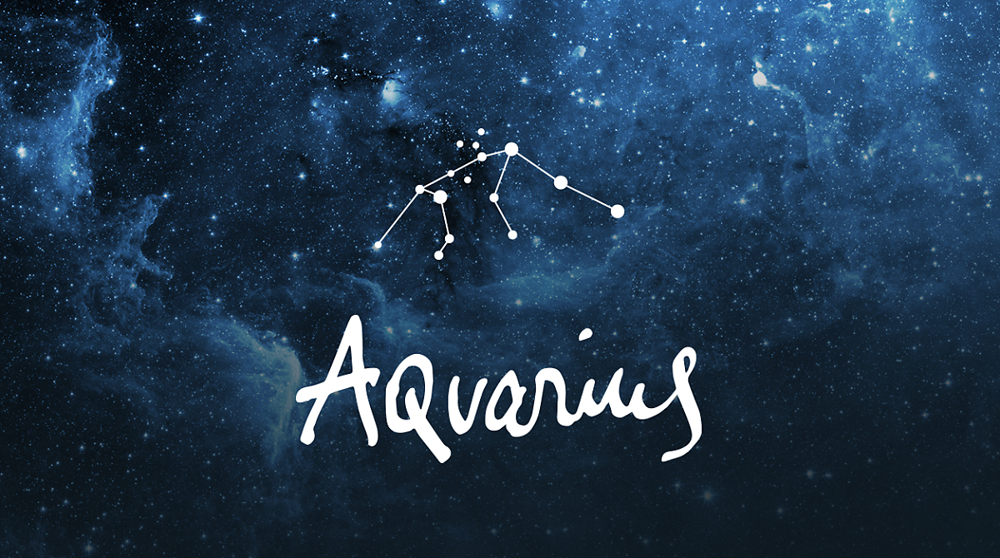

Aquarius (물병자리)
황도 12궁의 제 11궁
1월 20일 ~ 2월 18일
황도 12궁의 열한 번째 별자리이며, 수호성은 토성이다.
물병자리는 초거성 사달수드와 M2, M72의 구상성단, 그리고 토성성운과 나선성운 등이 속한 별자리이다. 가을 별자리들이 거의 다 그렇듯이 눈에 띄는 밝은 별이 없고,
거기에 별자리의 모양에서 이름을 떠올릴 수 있는 부분이 없어서 초보자가 찾기는 어렵다.
물병자리를 이루고 있는 주요 별로는 우선 α별인 사달멜리크가 있다. 이 별은 2.9등성으로 연노란색을 띄고 있으며 지구로부터 1000광년 떨어져 있다.
또 다른 별인 β별은 Sadalsuud(행운 중의 행운)이라는 고유명을 가지고 있으며, 2.9등성의 연노란색 별이다. γ별은 Sadachbia(은둔 가의 행운별)로, 4.0등성의 푸른색 별이다.
이 별은 85광년의 거리에 위치해 있다. δ별은 Skat(다리)라는 고유명을 가지고 있으며 3.3등성의 별이다. ε별은 Albali(마시는 자의 행운)으로 불리며 3.8등성의 별이다.
그리스 천문도에서는 커다란 물병을 지닌 사람으로 묘사되지만, 수메르나 이집트에서는 몸에서 물이 솟구쳐 나와 물병으로 들어가는 장면을 묘사해 놓았다.
즉, 이 별자리의 주인공이 물의 신인 에아(엔키)임을 말해준다.
전승에 의하면 이 별자리가 동쪽에서 보이면 우기가 시작된다는 의미였고, 그래서 하늘과 비를 지배하는 신의 이름을 붙인 것이다.